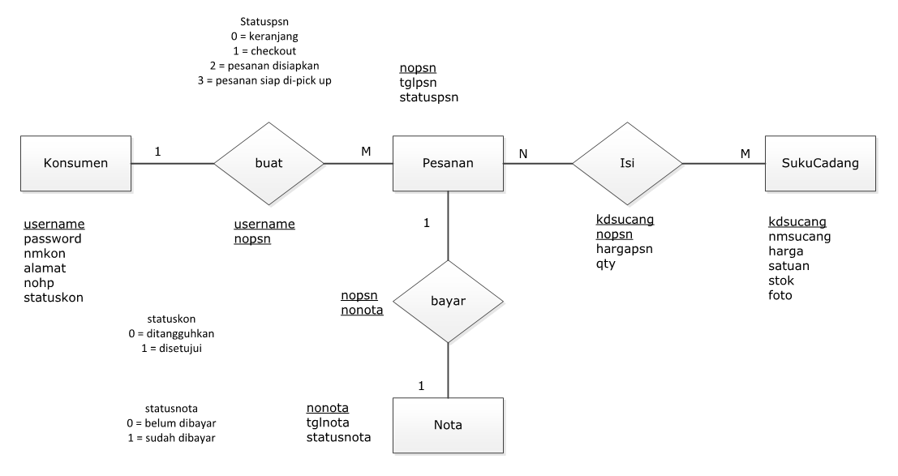
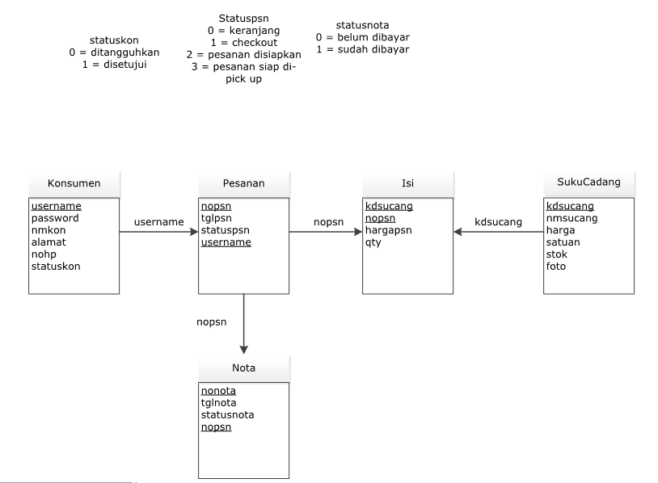
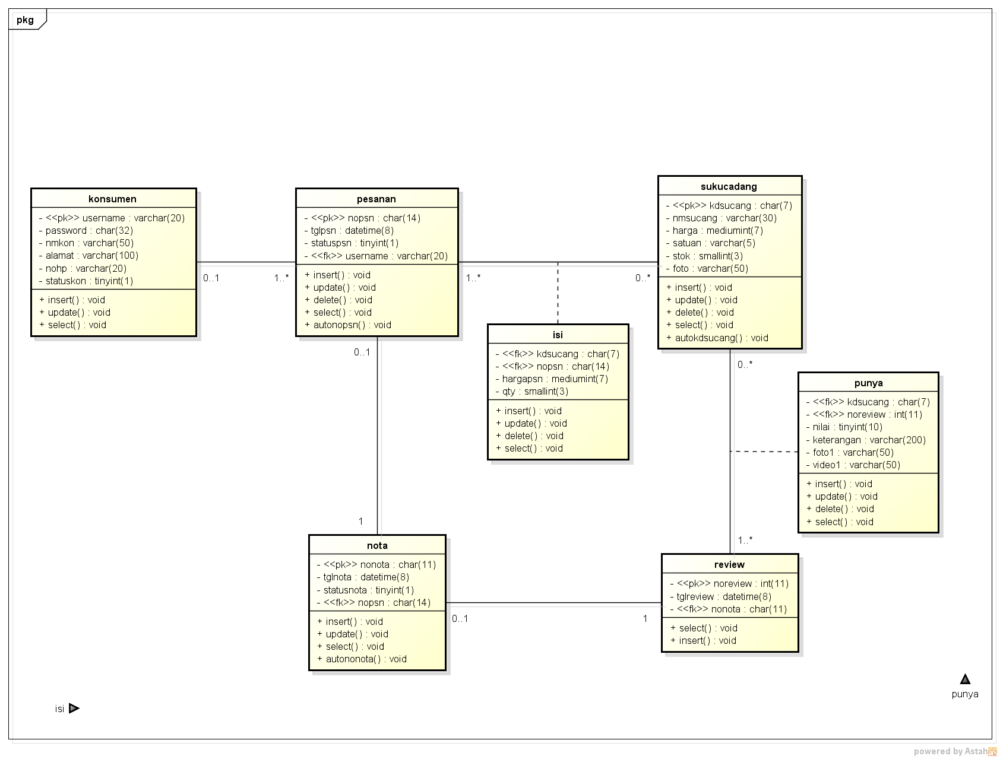

Saduran pertemuan 6:
1). Dosen mengingatkan untuk selalu mengirimkan link github untuk absen dan nilai tugas hasil saduran.
2). Penjelasan tentang class diagram
3). Class diagram menggambarkan hubungan antar class atau hubungan antar tabel (struktur tabel)
4). Class Diagram terdiri dari : Nama Class, attribut, method
5). Nama Class sebagai nama tabel
6). Attribut diisi dengan field yang menjadi key, nama field, tipe data, lebar/panjang data
7). Method diisi dengan operasi apa saja yang dilakukan pada class/tabel, misal: select/baca,insert/tambah/simpan,update/ubah,delete/hapus,count/hitung jumlah,
auto_numbering/nomor otomatis/kode otomatis, dst.
8). Class Diagram representasi lain dari dari Entity Relationship Diagram (ERD) dan Logical Record Structure (LRS), tetapi lebih lengkap karena memuat struktur tabel
dan operasi terhadap basis data (query) terhadap tabel tersebut.
9). Stereotype itu menentukan/menandakan attribute yang menjadi pk = primary key maupun fk = foreign key
10). Multiplicity itu menentukan tingkat hubungan/kardinalitas antar class melalui association (garis hubungan antar class)
- 1 => hanya 1 dan pasti hanya 1
- 0..1 => dapat tidak ada (kosong) sampai dengan 1
- 0..* => dapat tidak ada (kosong) sampai dengan tak terhingga (banyak)
- * => dapat banyak (tak terhingga)
- 1..* => sedikitnya 1 bisa lebih dari 1
Rancangan Layar Daftar Akun:

Rancangan ERD:

Rancangan LRS:

Class Diagram Rancangan Daftar Akun:

ERD dan LRS download disini: DOWNLOAD
AD Berjalan & Usulan, UCD, CD: DOWNLOAD